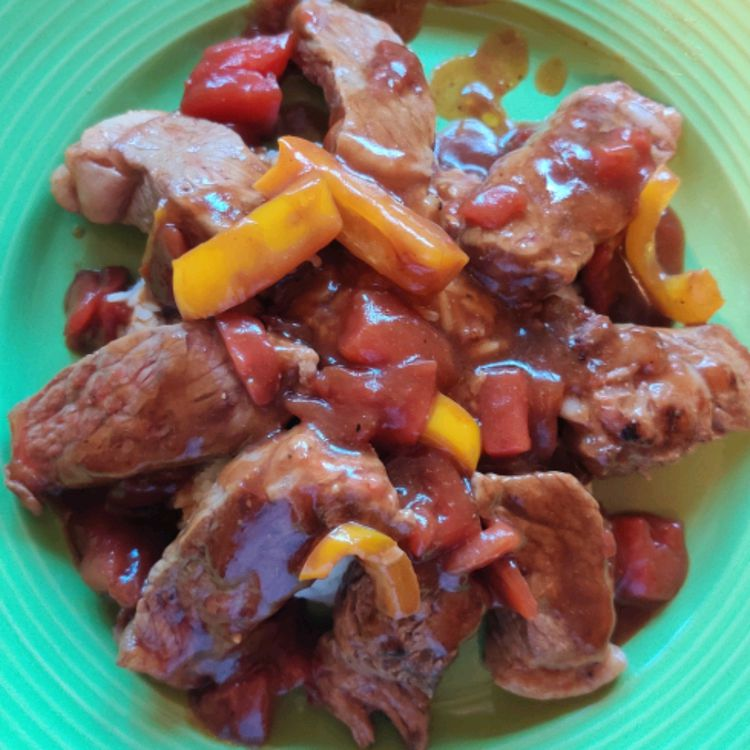

Rice and Steak Recipe

A simple dish containing rice and steak. Easy to do and really good to eat!
Ingredients
- 1 ½ pounds round steak
- 2 tablespoons vegetable oil
- 1 (29 ounce) can diced tomatoes
- 1 medium green bell pepper
- ½ teaspoon garlic powder
- ½ teaspoon ground ginger
- ½ teaspoon ground black pepper
- 4 tablespoons cornstarch
- 1 cube beef bouillon cube
- 2 cups warm water
- 2 cups hot cooked rice, or as needed
Steps
-
Trim any fat from steak; thinly slice steak into 2- to 3-inch strips. Core and seed bell pepper, then thinly slice into 3-inch strips.
-
Heat oil in a large skillet over medium-high heat. Add steak and cook for 2 to 3 minutes. Add bell peppers; cook and stir until peppers start to soften and steak is browned, 3 to 5 minutes.
-
Reduce heat and add diced tomatoes, soy sauce, garlic powder, ginger, and black pepper. Cover and simmer for 10 minutes.
-
Stir cornstarch and bouillon cube into water; stir well until dissolved. Pour mixture into the skillet. Cover and simmer, stirring occasionally, until sauce thickens to a gravy-like consistency, about 10 minutes.
-
Remove from heat and serve over hot cooked rice.
Home